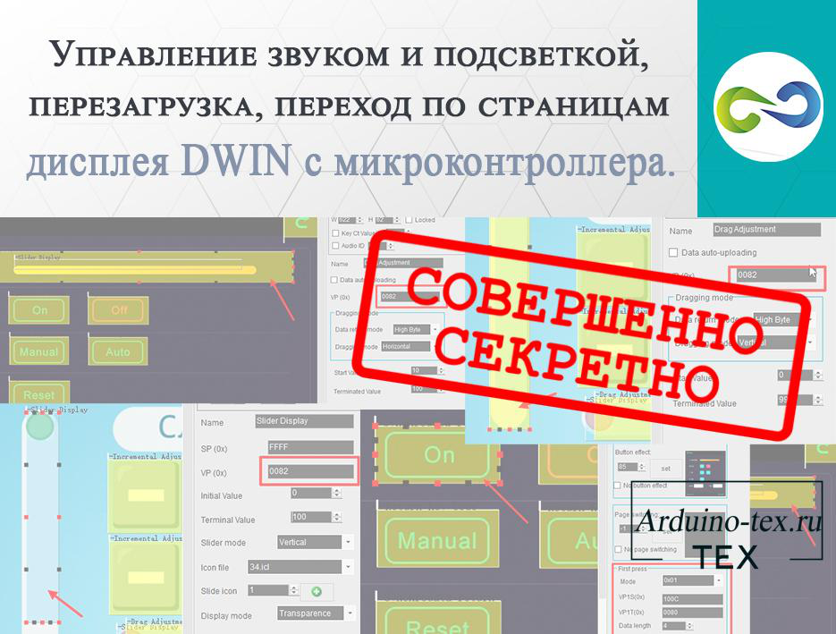
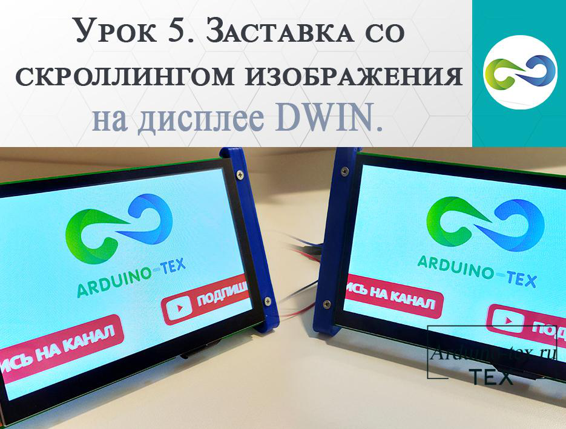
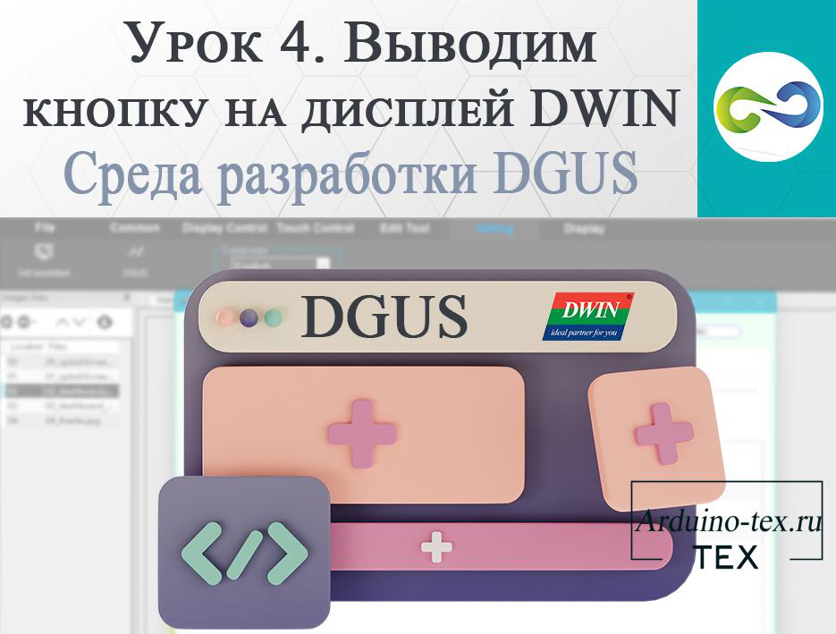
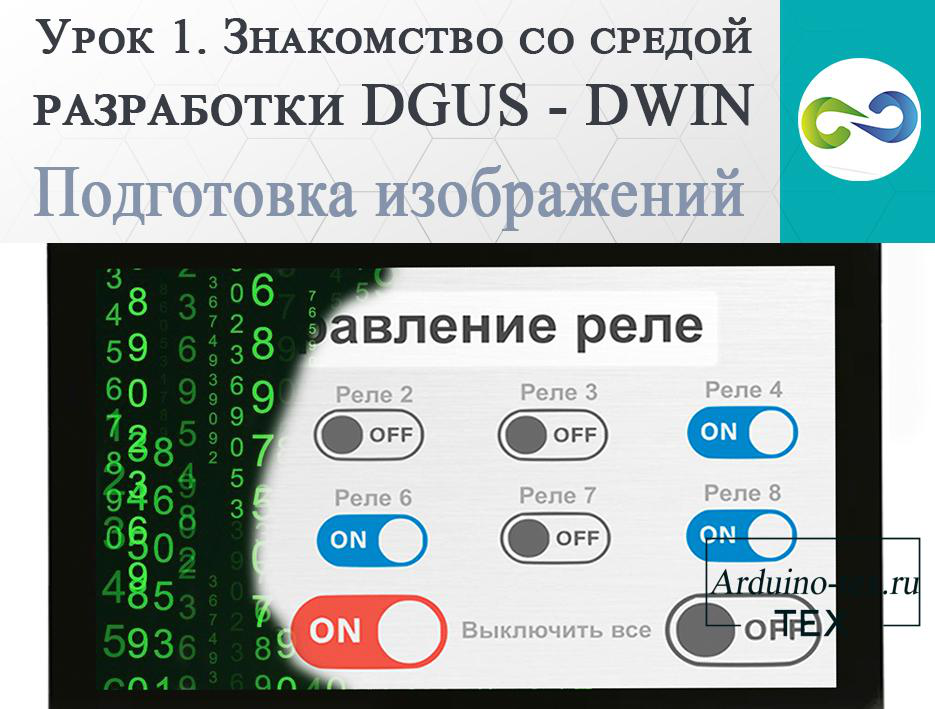
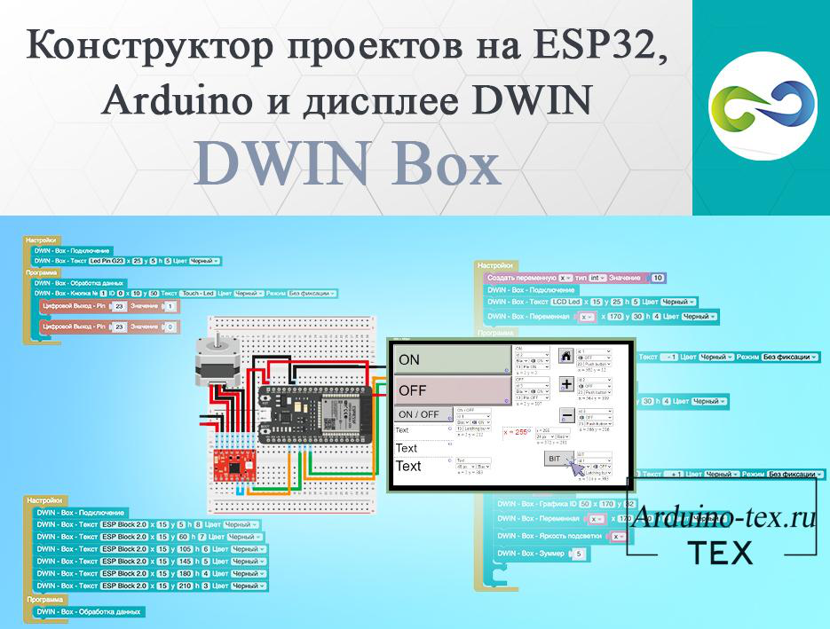
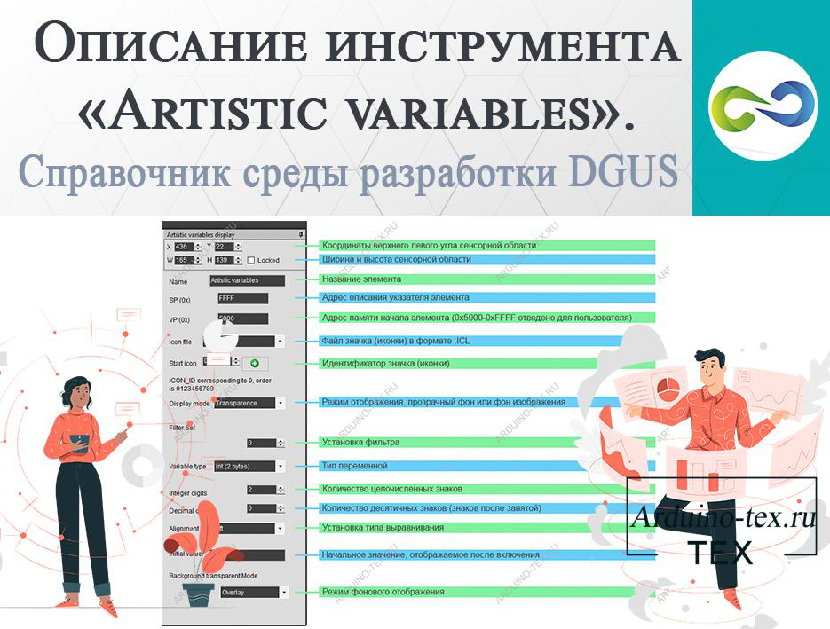
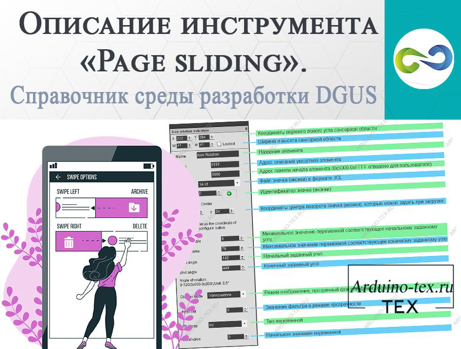
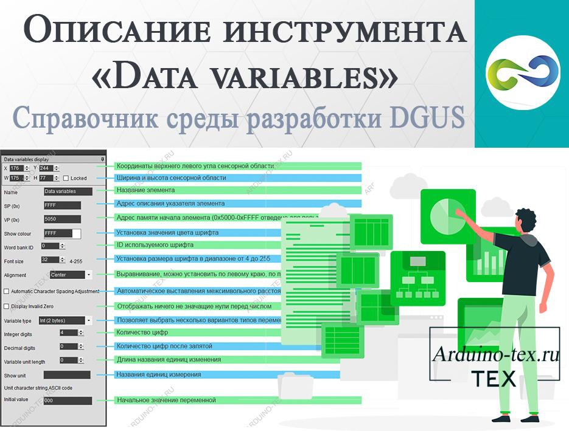
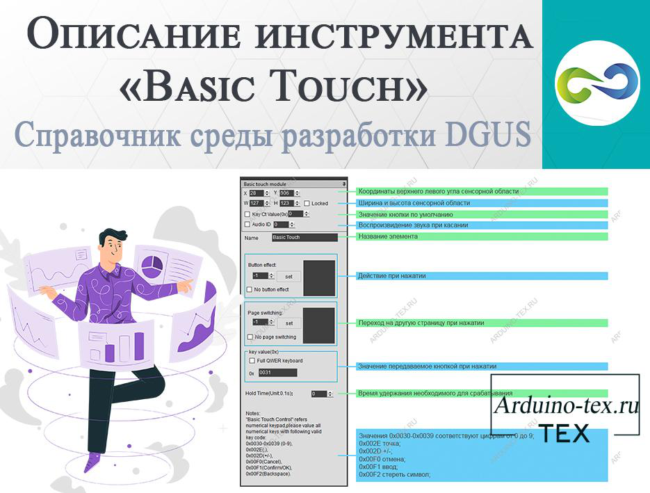
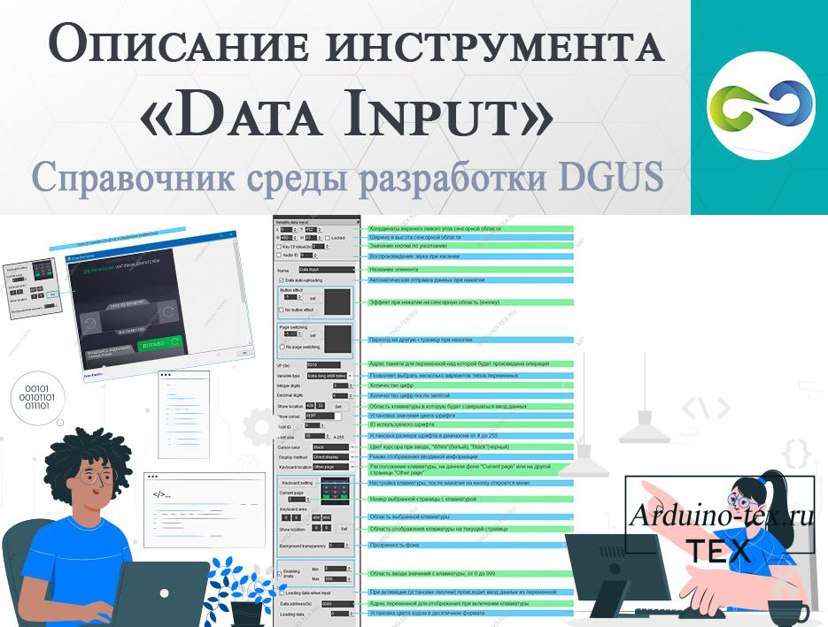

Смотрите также другую полезную информацию про дисплеи DWIN:
Описание инструмента «Data variables». Справочник среды разработки DGUS.
Описание инструмента «Basic Touch». Справочник среды разработки DGUS.
Описание инструмента «Data Input». Справочник среды разработки DGUS.
Описание инструмента «Return Key code». Справочник среды разработки DGUS.
Описание инструмента «Icon Rotation». Справочник среды разработки DGUS.
Дисплеи DWIN. Описание инструмента «Incremental Adjustment».
Описание инструмента «Bit icon». Справочник среды разработки DGUS.
Описание конфигурационного файла. Утилита CFG Edit.
Подробнее узнать про все инструменты, которые находятся на странице «Welcome» можно в уроке «Знакомство со средой разработки DGUS - DWIN. Подготовка изображений».

При создании проектов с использованием сенсорного HMI дисплея DWIN часто возникает потребность управлять функциями дисплея с микроконтроллера (МК), такого как Arduino, ESP8266, ESP32, STM32 и других. Параметров для управления достаточно много. Сегодня рассмотрим основные и часто используемые: управление яркостью подсветки, включение и выключение звукового уведомления при нажатии на тачскрин, переход по страницам проекта и перезагрузка дисплейного модуля с помощью команды с микроконтроллера.
Где посмотреть, какими параметрами можно управлять с МК?
23 декабря 2022 182
Урок 5. Заставка со скроллингом изображения на дисплее DWIN.

Для того чтобы покупатель знал, кто произвел оборудование, часто на устройствах с дисплеями делают приветственную страницу. Также данная страница служит защитой от ошибок, которые могут возникнуть, пока микроконтроллер не загрузился, а управление с дисплея уже доступно. Поэтому во многих проектах делаю заставку.
Чаще всего это просто картинка, которая появляется на определённое время. Обычно на 3-5 секунд. Или пока не загрузится микроконтроллер и будет готов к работе.
Создаём страницу со скроллингом части изображения.
23 августа 2022 156
Урок 4. Выводим кнопку на дисплей DWIN. Среда разработки DGUS.

Продолжаем изучать среду разработки DGUS (DWIN Graphic Utilized Software). Данное программное обеспечение позволяет создавать красивые интерфейсы для HMI дисплеев компании DWIN. Сегодня на уроке научимся создавать кнопки. В этом нам поможет инструмент «Return Key code». Информацию о других инструментах среды разработки DGUS вы можете прочитать в разделе сайта «DWIN».
Создаём кнопку на дисплее DWIN.
18 июля 2022 180
Урок 1. Знакомство со средой разработки DGUS - DWIN. Подготовка изображений.

В данном уроке познакомимся со средой разработки DGUS (DWIN Graphic Utilized Software). Рассмотрим, как подготовить изображения для проекта с использованием дисплея компании DWIN. Подробно разберём, как загрузить изображения в проект и подготовить основные файлы проекта.
Среда разработки DGUS.
Давайте рассмотрим программу DGUS (сокращение от DWIN Graphic Utilized Software) и основные формируемые файлы для работы. Ниже представлена краткая диаграмма разработки ПО.
25 мая 2022 210
Конструктор проектов на ESP32, Arduino и дисплее DWIN - DWIN Box.

Дисплеи компании DWIN достаточно недорогие и функциональные, что делает их интересным решением при реализации своих проектов и DIY. Но, несмотря на плюсы, есть и минусы — это среда разработки DGUS, которая на английском языке, и при разработке интерфейса требуется подготовить графические элементы. Эти небольшие особенности приводят к сложностям быстрой реализации проекта на дисплее от компании DWIN Technology. Исходя из этого, было принято решение сделать простой конструктор, который позволит без программирования и отрисовки кнопок, слайдеров, плашек под текст создать проект с использованием дисплея DWIN. Конструктор DWIN Box был интегрирован с блочным программированием. Ниже вы можете посмотреть презентацию от разработчика ArduBlock.
17 февраля 2023 216
Описание инструмента «Artistic variables». Справочник среды разработки DGUS.

При реализации проектов с использованием HMI дисплеев требуется выводить цифровую информацию. Иногда требуется вывод цифр в определённом стиле. Например, как сделано в проекте «Часы с функцией плеера и ночника на сенсорном дисплее».
В среде разработки DGUS дисплеев DWIN есть инструмент «Artistic variables», который позволяет подменить цифры на иконки, которые можно создать самостоятельно. Для этого достаточно создать 10 иконок и загрузить их в дисплей. И программа автоматически выведет однозначное, двухзначное, трёхзначное число и больше символов без дополнительного написания кода или манипуляций. Достаточно удобно, не правда ли!
------
Описание инструмента «Page sliding». Справочник среды разработки DGUS.

В большинстве проектов с использованием сенсорных дисплеев необходимо реализовывать несколько страниц управления. Для перехода между ними используется обычная кнопка. Урок по работе с кнопкой можно посмотреть тут. В дисплеях от компании DWIN есть возможность перелистывать страницы, для чего необходимо сделать движение пальцем в нужном направлении. Для этого в среде разработки DGUS используется инструмент «Page sliding».
Описание инструмента «Page sliding».
15 августа 2022 176
--------
Описание инструмента «Data variables». Справочник среды разработки DGUS.

При реализации проектов с использованием сенсорного дисплея сложно обойтись без вывода цифровых данных. Вывод целочисленных и дробных значений на дисплеи DWIN осуществляется с помощью инструмента «Data variables». В среде разработки DGUS также предусмотрен инструмент «Artistic variables», который позволяет вывести свои цифры в виде иконок. Про него поговорим в следующий раз, а сегодня подробнее разберём инструмент «Data variables».
Описание инструмента «Data variables».
4 августа 2022 151
Подробнее …
-----------------------------------------------------------
Описание инструмента «Basic Touch». Справочник среды разработки DGUS.

Одной отличительной особенностью дисплеев DWIN является возможность создания собственной текстовой и цифровой клавиатуры. Вывод цифровой клавиатуры рассмотрели при разборе работы с инструментом «Data Input», а для создания обработчика нажатия на клавиши цифровой клавиатуры используется инструмент «Basic Touch». Также данный инструмент можно использовать для решения других задач.
Инструмент среды разработки DGUS «Basic Touch».
2 августа 2022 163
----------------------------
Описание инструмента «Data Input». Справочник среды разработки DGUS.

В проектах с использованием дисплея часто требуется устанавливать цифровые значения. Для этого можно использовать инструмент «Incremental Adjustment», который позволяет увеличивать или уменьшать значение на указанное число. Но такое решение не всегда применимо. Например, если нужно задавать значения в большом диапазоне. Для решения данной задачи отлично подойдёт цифровая клавиатура, которую можно сделать с помощью «Data Input». Подробное описание данного инструмента можно найти в официальной инструкции среды разработки DGUS, скачать которую можно с официального сайта компании DWIN или внизу статьи в разделе «файлы для скачивания».
Описание инструмента «Data Input».
25 июля 2022 188